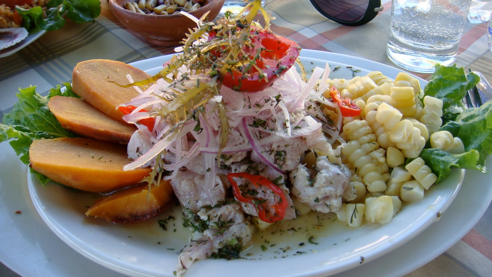

Ceviche Peruano
25/01/2018

El ceviche peruano de pescado es una de las comidas más deliciosas que ha podido inventar el ser humano durante su existencia. Ya sea de pescado, de conchas, mariscos o mixto, el ceviche peruano no sólo ha estado presente en la mesa como maestro de ceremonias para todos aquellos que quieren degustar la magnífica gastronomía del país latinoamericano, este plato se ha convertido en un manjar internacional, en una delicia de miles de hogares latinoamericanos (y más allá) quienes, antes de servir la comida principal, preparan “un cevichito de entrada, para compartir”.